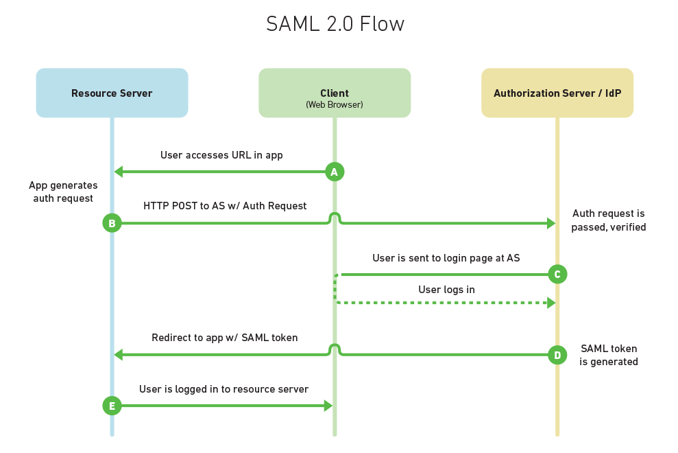
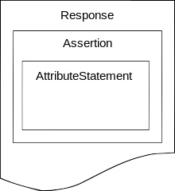
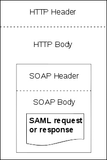

安全领域的重要概念
安全断言标记语言(Security Assertion Markup Language，简称SAML)
原则

HTTP Request to Service Provider
In step 1, the principal, via an HTTP User Agent, makes an HTTP request for a secured resource at the service provider without a security context.Service Provider Determines Identity Provider
In step 2, the service provider obtains the location of an endpoint at an identity provider for the authentication request protocol that supports its preferred binding. The means by which this is accomplished is implementation-dependent. The service provider MAY use the SAML identity provider discovery profile described in Section 4.3.issued by Service Provider to Identity Provider
In step 3, the service provider issues anmessage to be delivered by the user
agent to the identity provider. Either the HTTP Redirect, HTTP POST, or HTTP Artifact binding
can be used to transfer the message to the identity provider through the user agent.Identity Provider identifies Principal
In step 4, the principal is identified by the identity provider by some means outside the scope of this profile. This may require a new act of authentication, or it may reuse an existing authenticated session.Identity Provider issues
to Service Provider
In step 5, the identity provider issues amessage to be delivered by the user agent to the service provider. Either the HTTP POST, or HTTP Artifact binding can be used to transfer the message to the service provider through the user agent. The message may indicate an error, or will include (at least) an authentication assertion. The HTTP Redirect binding MUST NOT be used, as the response will typically exceed the URL length permitted by most user agents. Service Provider grants or denies access to Principal
In step 6, having received the response from the identity provider, the service provider can
respond to the principal's user agent with its own error, or can establish its own security context for the principal and return the requested resource.Note that an identity provider can initiate this profile at step 5 and issue a
message to a service provider without the preceding steps.
SAML规范定义了三个角色：委托人（通常为一名用户）、身份提供者（IdP），服务提供者（SP）。在用SAML解决的使用案例中，委托人从服务提供者那里请求一项服务。服务提供者请求身份提供者并从那里并获得一个身份断言。服务提供者可以基于这一断言进行访问控制的判断——即决定委托人是否有权执行某些服务。
在将身份断言发送给服务提供者之前，身份提供者也可能向委托人要求一些信息——例如用户名和密码，以验证委托人的身份。SAML规范了三方之间的断言，尤其是断言身份消息是由身份提供者传递给服务提供者。在SAML中，一个身份提供者可能提供SAML断言给许多服务提供者。同样的，一个服务提供者可以依赖并信任许多独立的身份提供者的断言。
设计
SAML 创建在一些现有标准之上：
Extensible Markup Language (XML)
大多数SAML交换是以一个标准化的XML方言表示，这也是SAML的名称（Security Assertion Markup Language）的根源。; XML Schema (XSD): SAML断言和协议部分采用XML Schema。XML Signature
SAML 1.1和SAML 2.0都为身份验证和消息完整性使用基于XML Signature标准的数字签名。XML Encryption
SAML 2.0使用XML Encryption为加密名称标识符、加密属性和加密断言提供元素（SAML 1.1没有加密功能）。但XML加密据报有着严重的安全问题。[8][9]Hypertext Transfer Protocol (HTTP)
SAML很大程度上依赖超文本传输协议作为其通信协议。SOAP
SAML指定使用SOAP，尤其是SOAP 1.1。
SAML定义了基于XML的断言、协议、绑定和配置。术语SAML核心（SAML Core）指SAML断言的一般语法和语义，以及用于请求和在系统实体间传输这些断言的协议。SAML协议指谁来传输，而不是如何传输（后者由所选择的绑定决定）。因此SAML核心只定义了“纯粹的”SAML断言，以及SAML的请求和响应元素。
SAML绑定决定SAML请求和响应如何映射到标准的消息或通信协议。一个重要的、同步的绑定是SAML SOAP绑定。
SAML配置是使用特定断言、协议和绑定组成的适用于所定义使用情况的一个具体表现形式。
断言
一个SAML断言包含一个安全信息包：
<saml:Assertion ...>
..
</saml:Assertion>
简而言之，依赖方按下述方式解释一个断言：
断言A是在条件C 有效的前提下由发布者R 关于主题S在时间t发布的 。
SAML断言通常从IdP传送到SP。断言包括一些SP用来做权限控制的声明（statements）。SAML提供如下三种语句：
- 身份验证（Authentication）声明
- 属性（Attribute）声明
- 授权决策（Authorization decision）声明
身份验证声明会向SP断言，该委托人确实被IdP在一个特定的时间通过一个特定的认证方式成功认证。关于该被认证的委托人的其他信息（也叫身份验证上下文）也可能会包含在一条身份验证声明中。
属性声明会断言，一个主题和一些属性关联。一个属性是一个简单的键值对。依赖方使用属性来实现访问控制。
授权决策声明会断言，在证据E下一个主题是否被允许在资源R上执行动作A。SAML中的授权决策声明的功能被有意的限制了，因为在更高级的使用场景中更推荐使用XACML。
协议

SAML协议响应
A SAML protocol describes how certain SAML elements (including assertions) are packaged within SAML request and response elements, and gives the processing rules that SAML entities must follow when producing or consuming these elements. For the most part, a SAML protocol is a simple request-response protocol.
The most important type of SAML protocol request is called a query. A service provider makes a query directly to an identity provider over a secure back channel. Thus query messages are typically bound to SOAP.
Corresponding to the three types of statements, there are three types of SAML queries:
- Authentication query
- Attribute query
- Authorization decision query
Of these, the attribute query is perhaps most important (and still the object of much research[来源请求]). The result of an attribute query is a SAML response containing an assertion, which itself contains an attribute statement. See the SAML 2.0 topic for an example of attribute query/response.
绑定
A SAML binding is a mapping of a SAML protocol message onto standard messaging formats and/or communications protocols. For example, the SAML SOAP binding specifies how a SAML message is encapsulated in a SOAP envelope, which itself is bound to an HTTP message.
SAML 1.1 specifies just one binding, the SAML SOAP Binding. In addition to SOAP, implicit in SAML 1.1 Web Browser SSO are the precursors of the HTTP POST Binding, the HTTP Redirect Binding, and the HTTP Artifact Binding. These are not defined explicitly, however, and are only used in conjunction with SAML 1.1 Web Browser SSO. The notion of binding is not fully developed until SAML 2.0.
SAML 2.0 completely separates the binding concept from the underlying profile. In fact, there is a brand new binding specification in SAML 2.0 that defines the following standalone bindings:
- SAML SOAP Binding (based on SOAP 1.1)
- Reverse SOAP (PAOS) Binding
- HTTP Redirect (GET) Binding
- HTTP POST Binding
- HTTP Artifact Binding
- SAML URI Binding

SAML over SOAP over HTTP
配置
A SAML profile describes in detail how SAML assertions, protocols, and bindings combine to support a defined use case. The most important SAML profile is the Web Browser SSO Profile.
The Web Browser SSO Profile was completely refactored for SAML 2.0. Conceptually, SAML 1.1 Browser/Artifact and Browser/POST are special cases of SAML 2.0 Web Browser SSO. The latter is considerably more flexible than its SAML 1.1 counterpart due to the new "plug-and-play" binding design of SAML 2.0. Unlike previous versions, SAML 2.0 browser flows begin with a request at the service provider. This provides greater flexibility, but SP-initiated flows naturally give rise to the so-called Identity Provider Discovery problem, the focus of much research today. In addition to Web Browser SSO, SAML 2.0 introduces numerous new profiles:
- SSO Profiles
- Web Browser SSO Profile
- Enhanced Client or Proxy (ECP) Profile
- Identity Provider Discovery Profile
- Single Logout Profile
- Name Identifier Management Profile
- Artifact Resolution Profile
- Assertion Query/Request Profile
- Name Identifier Mapping Profile
- SAML Attribute Profiles
安全
SAML规范推荐、并在某些情况下要求各种安全机制：
- TLS 1.0+用于传输层安全
- XML Signature和XML Encryption用于消息层安全
使用
SAML的主要用途是“网页浏览器单点登录（SSO）。
A user wielding a user agent (usually a web browser) requests a web resource protected by a SAML service provider. The service provider, wishing to know the identity of the requesting user, issues an authentication request to a SAML identity provider through the user agent. The resulting protocol flow is depicted in the following diagram.
Copyright © 2015 Powered by MWeb, Theme used GitHub CSS.